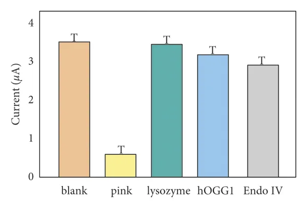

真理，不以人的意志为转移
原文：https://mp.weixin.qq.com/s?__biz=MzAwMzIzOTk5OQ==&mid=2247496710&idx=1&sn=b051e10d6d0042def9018181c7e15232&chksm=9b3c8d56ac4b0440425538f252716e0aa25b77a52f1f08b47454f47d6c18c5247e53d1d9ad39#rd 合集：漫谈胡侃
今天是2023年2月7日，离李医生罹难恰好过去了三年，相信三年里大家拥有一些共同的回忆。Biomamba是15年上的大一，作为药学生的我依稀记得当年入学时宣读的《医学生誓词》：健康所系，性命相托。当我步入神圣医学学府的时刻，谨庄严宣誓: 我志愿献身医学，热爱祖国，忠于人民，恪守医德 ，尊师守纪，刻苦钻研，孜孜不倦，精益求精，全面发展。我决心竭尽全力除人类之病痛，助健康之完美，维护医术的圣洁和荣誉，救死扶伤，不辞艰辛，执着追求，为祖国医药卫生事业的发展和人类身心健康奋斗终生[1]。在我看来，这是一份承诺，是对科学、对真理的承诺 。而李医生不受外界压力而转移的吹哨行为正是其履行承诺的重要体现。生物与医药的很多问题原本就不易量化，就拿最近这个后遗症和无症状率来说，究竟是有还是无、是90%还是10%？在拥有数亿样本容量的当下，也依旧吵不出个答案。这其中有些不让吹哨的因素，但我始终认为真理应沐浴在阳光下接受大家的讨论、研究。李医生面对荣辱、生死尚且无所畏惧地吹响哨音、传播事实真相，那么媒体上带着任务来乱吹风的”专家“(就不点名引战了)难道不应对自己多年来的学术生涯感到无地自容吗？前些天看见一篇用字母T作误差棒的文献，属实让人大跌眼镜。还是那句话，李医生面对荣辱、生死尚且无所畏惧地吹响哨音、传播事实真相，为了蝇头小利而违反科研道德的人应为人所不齿。号里的关注用户大多为生物医药界的科研人员，愿各位能够不忘初心、追求真理，你我共勉 。

参考:[1]https://baike.baidu.com/item/%E4%B8%AD%E5%8D%8E%E4%BA%BA%E6%B0%91%E5%85%B1%E5%92%8C%E5%9B%BD%E5%8C%BB%E5%AD%A6%E7%94%9F%E8%AA%93%E8%AF%8D/2641876[2]https://www.hindawi.com/journals/amse/2022/3802603/ 您点的每个赞和在看，我都认真当成了喜欢
您点的每个赞和在看，我都认真当成了喜欢